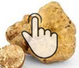

Variété de truffe et périodes de récolte
Comme tout trésor qui se respecte, les truffes ont besoin de récolteurs experts qui savent comme extraire - on dit «caver» - ce magnifique produit, afin de l'utiliser dans des délicieuse recettes.
La truffe ressemble à un tubercule dont la taille et la couleur varient selon les espèces: il y a en effet de nombreuses qualité de ce produit, comme la truffe blanche ou noire pregiato, la truffe de Bourgogne, la truffe blanchette, la truffe noire d'hiver et la truffe d'été ou scorzone, toutes présentes dans les Abruzzes.
 Peu de gens savent que les périodes de récolte de la truffe sont variable.
Peu de gens savent que les périodes de récolte de la truffe sont variable.
En effet, la loi régionale (des Abruzzes) n.66 du 21/12/2012 spécifie qu'on doit laisser reposer les truffes pour une certaine période, afin de leur permettre de se reproduire. Le prix de la truffe est corrélé directement avec les périodes de récolte et le poids du tubercule. C'est pour cette raison qu'on demande toujours à nos clients de nous contacter avant de faire une commande et de nous demander un devis; parce-que le prix de la truffe varie en fonction d'un bon nombre de caractéristiques.
Peu de gens savent que les périodes de récolte de la truffe sont variable. En effet, la loi régionale (des Abruzzes) n.66 du 21/12/2012 spécifie qu'on doit laisser reposer les truffes pour une certaine période, afin de leur permettre de se reproduire. Le prix de la truffe est corrélé directement avec les périodes de récolte et le poids du tubercule. C'est pour cette raison qu'on demande toujours à nos clients de nous contacter avant de faire une commande et de nous demander un devis; parce-que le prix de la truffe varie en fonction d'un bon nombre de caractéristiques.

Truffe Blanche
Tuber Magnatum Pico
Caractéristiques: à l'extérieur elle se présente lisse, de couleur jaune ocre ou jaune olive. À l'intérieure la pulpe est...

Truffe Noire, Scorzone
Tuber Aestivum Vitt
Caractéristiques: à l'extérieur elle se présente de couleur noir avec des grandes verrues en saillie, qui le rendent facilement reconnaissable. La pulpe...

Truffe Noire, Pregiato
Tuber Melanosporum Vitt.
Caractèristiques: l'écorce est brun rougeâtre, parfois avec des taches de couleur rouille. Elle présente des petites verrues...

Truffe Uncinato ou Scorzone d'hiver
Tuber Uncinatum Chatin
Caractéristiques: à l'extérieure elle ressemble au Tuber Aestivum mais à différence de ce dernier, elle présente des verrues beaucoup moins grandes; la pulpe interne est plus sombre; l'odeur est...